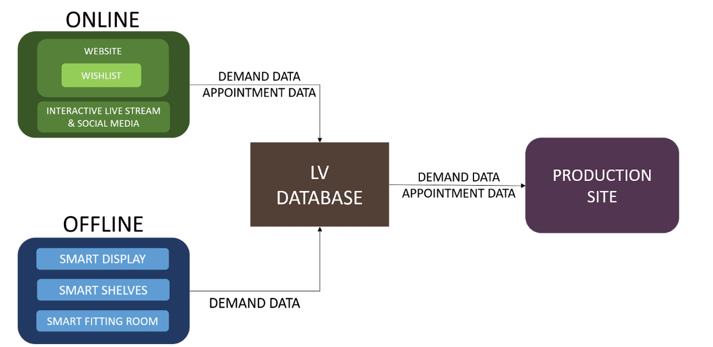
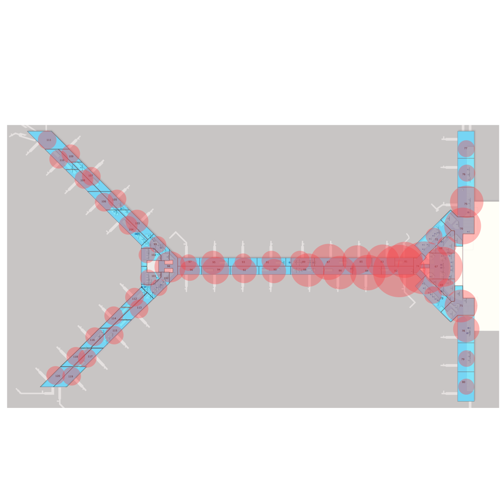
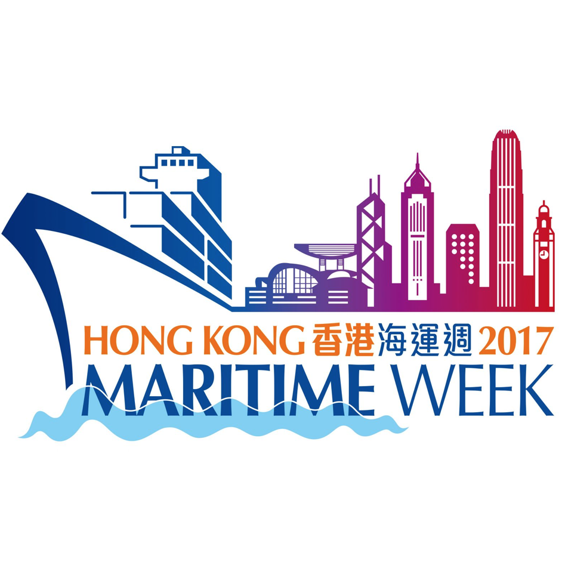
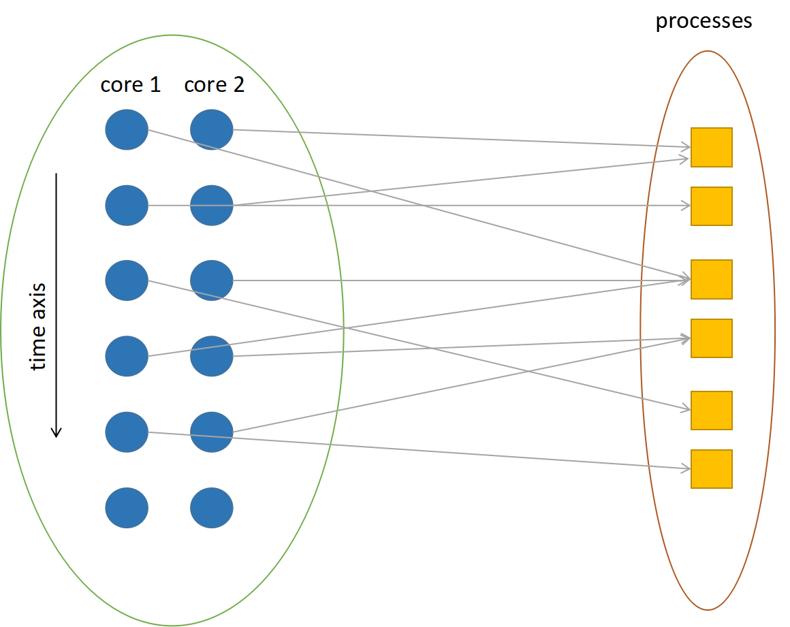

Other Projects
Projects/Cases
Digital Twin for Industrial Robot Applications
 |
A digital twin “is a digital replica of a living or nonliving physical entity. By bridging the physical and the virtual world, data is transmitted seamlessly allowing the virtual entity to exist simultaneously with the physical entity (El Saddik, A., 2018). Using this technology, we can tele-operate robotic arm with Virtual Reality (VR) and motion sensing.
|
Omini-channel global supply chain solutions for Louis Vuitton
|
 |
High-end fashion companies are facing great challenges in the omini-channel business environment. We propose an integrated solution for Louis Vuitton to optimize logistics/production decision and enhance customer experience through interactive real time data collection and analysis.
|
AirGo: An airport e-commerce system
|
 |
Selected teams will be given a set of air flight schedule and actual aircraft movement data, together with the open data published by HKSAR Government, and 36 hours to develop innovative models, services or systems with a particular focus that can bring values to the cities.[View].
|
Marindex: A maritime information system
|
 |
The Hackathon is one of the feature events in the Hong Kong Maritime Week. Participants were given a set of carrier service network and vessel sailing schedule data for completing the work within 40 hours.[View]
|
Other Write-ups
Optimizing Multi-core CPU Scheduling
|
 |
The Operating System(OS) is an important piece of software present in virtually all computer systems, which manages computer hardware and softwares and provides common resources for computer programs. We present a MIQP model in this report to solve processes scheduling problem in multicore CPU and further propose a more general formulation using rubust optimization when the processes have random arrival time and duration. [View] |
A Stochastic Multi-Agent Transportation Network Model for Evacuation Planning
Efficient evacuation planning gains more and more popularity in researchers because of the frequently happened disaster recently. We provide a comprehensive classification of existing works regarding model approaches and formulations. In addition, a transportation network model of evacuation planning with stochastic components is introduced. [View] |